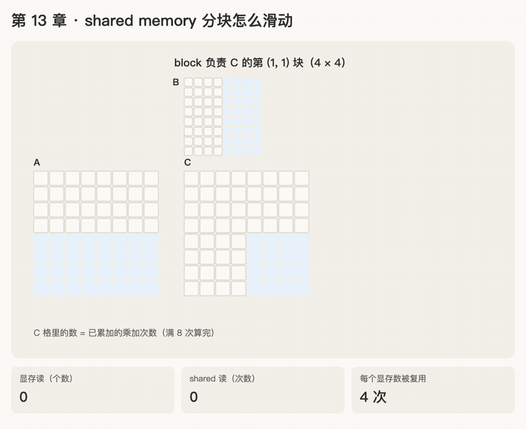

第 13 章 · SGEMM ①：从 naive 到 shared memory 分块
本章回答：矩阵乘法 C = A × B 最直接的 GPU 写法为什么只有峰值的 1%？只改"哪个线程算哪个元素"为什么能快 6 倍？shared memory 分块（tiling）怎么让每个数从显存读一次、用 32 次？
讲解日期：2026-11-14 · 上一章：第 12 章 scan · 下一章：第 14 章 SGEMM ②
对应原文：Boehm《How to Optimize a CUDA Matmul Kernel for cuBLAS-like Performance: a Worklog》Kernel 1–3（materials/text/blog-boehm-cuda-matmul-worklog.txt第 20–62 行性能表、第 63–382 行）；Best Practices §10.2.3.2 Shared Memory in Matrix Multiplication（text/cuda-c-best-practices-guide.txt第 1772–1936 行）；PMPP 第 5 版 ch.5（Memory architecture and data locality）本章缩写：SGEMM = Single-precision GEneral Matrix Multiply（单精度 / 通用 / 矩阵乘，\(C = \alpha AB + \beta C\)）· GEMM = GEneral Matrix Multiply（通用矩阵乘）· cuBLAS = CUDA Basic Linear Algebra Subprograms（CUDA 基础线性代数子程序库）· BM / BN / BK = Block 在 M / N / K 方向上的 tile 大小
讲解
第一步：一个线程算 C 的一个元素（2026-11-14）
\(C\) 是 \(M \times N\)，\(A\) 是 \(M \times K\)，\(B\) 是 \(K \times N\)：
最直接的 GPU 写法（Boehm Kernel 1）：开 \(M \times N\) 个线程，每个线程负责 C 的一个格子，自己跑一个长度 K 的循环做点积。
const uint x = blockIdx.x * blockDim.x + threadIdx.x; // 行
const uint y = blockIdx.y * blockDim.y + threadIdx.y; // 列
if (x < M && y < N) {
float tmp = 0.0;
for (int i = 0; i < K; ++i)
tmp += A[x * K + i] * B[i * N + y];
C[x * N + y] = alpha * tmp + beta * C[x * N + y];
}
Boehm 在 A6000 上测 4092 × 4092：309 GFLOP/s，是 cuBLAS 的 1.3%（cuBLAS 23250 GFLOP/s）。
慢在哪？ 每做一次乘加（2 FLOP），要从显存读 A 的一个数和 B 的一个数（8 字节）——算术强度只有 0.25 FLOP/byte，远低于 A6000 的脊点（30 TFLOP/s ÷ 768 GB/s ≈ 39，第 9 章）。更糟的是，这 8 字节还不是合并读的。
第二步：Kernel 2——换个映射，快 6 倍（2026-11-14）
Kernel 1 里 threadIdx.x 对应 C 的行 x。一个 warp 是 32 个 threadIdx.x 连续的线程 → 它们是 C 的 32 个不同行，同一时刻读 A[x * K + i]——地址相差 K 个 float，每个线程一箱（第 6 章的最坏情况）。
Boehm Kernel 2 只改了两行，让 warp 里连续的线程对应 C 同一行的连续列：
const int x = blockIdx.x * BLOCKSIZE + (threadIdx.x / BLOCKSIZE);
const int y = blockIdx.y * BLOCKSIZE + (threadIdx.x % BLOCKSIZE);
现在一个 warp 的 32 个线程：x 相同、y 连续。读 A[x * K + i]——32 个线程读同一个地址，广播；读 B[i * N + y]——连续地址，合并。
结果：显存吞吐从 15 GB/s 涨到 110 GB/s，1987 GFLOP/s，8.5%。一行计算都没改，只改了"谁算哪个"。这就是第 6 章那句话的威力：让 threadIdx.x 对应内存里变化最快的那一维。
第三步：数据复用——同一个数被读了多少次（2026-11-14）
还是太慢。数一数显存读了多少：C 有 \(MN\) 个元素，每个读 \(2K\) 个数，一共 \(2MNK\) 次读。可 A 和 B 加起来只有 \(MK + KN\) 个数。\(M = N = K = 4096\) 时：
每个数平均被读了 4096 次。 虽然有 L1 / L2 缓存挡掉一部分，但大部分还是要走显存。
观察：C 的同一行的所有元素都要用 A 的同一行；C 的同一列都要用 B 的同一列。如果一个 block 负责 C 的一个 \(32 \times 32\) 的小块，那这 1024 个线程需要的是 A 的 32 行和 B 的 32 列——同一块数据被 block 里的 32 个线程重复使用。把它搬进 shared memory，读一次显存，在片上用 32 次（第 5 章："读一次、用很多次"）。
第四步：Kernel 3——沿 K 方向滑动的 tile（2026-11-14）
A 的 32 行有 K 列，一次放不进 shared memory。所以沿 K 方向分段，每段 BK = 32：
for (bk = 0; bk < K; bk += 32) {
① block 里 1024 个线程合作，把 A 的 32×32 小块、B 的 32×32 小块搬进 shared（每人搬各 1 个数，合并读）
② __syncthreads() // 等搬完
③ 每个线程用 shared 里的数做 32 次乘加：tmp += As[ty][k] * Bs[k][tx]
④ __syncthreads() // 等大家算完，才能覆盖 shared 搬下一段
}
写回 C
Boehm 的核心代码：
__shared__ float As[BLOCKSIZE * BLOCKSIZE];
__shared__ float Bs[BLOCKSIZE * BLOCKSIZE];
for (int bkIdx = 0; bkIdx < K; bkIdx += BLOCKSIZE) {
As[threadRow * BLOCKSIZE + threadCol] = A[threadRow * K + threadCol];
Bs[threadRow * BLOCKSIZE + threadCol] = B[threadRow * N + threadCol];
__syncthreads();
A += BLOCKSIZE; B += BLOCKSIZE * N; // 指针往 K 方向挪一段
for (int dotIdx = 0; dotIdx < BLOCKSIZE; ++dotIdx)
tmp += As[threadRow * BLOCKSIZE + dotIdx] * Bs[dotIdx * BLOCKSIZE + threadCol];
__syncthreads();
}
算账：每一段，block 从显存读 \(2 \times 32 \times 32\) 个数，做 \(32 \times 32 \times 32\) 次乘加。每个从显存读的数被用了 32 次（tile 边长）。显存流量降到 Kernel 1 的 1/32。
两个 __syncthreads() 正是第 7 章的两条铁律：② 是"写完再读"，④ 是"读完再覆盖"。
shared memory 用量：\(2 \times 32 \times 32 \times 4 = 8\) KB / block。
Boehm 的表：2980 GFLOP/s，12.8%。（正文写的是约 2200，因为 Kernel 2 已经有不错的 L1 命中率，这一步提升有限；表格是更新后的数字。）
第五步：为什么还只有 13%——下一章的问题（2026-11-14）
Kernel 3 的内循环：每次乘加要从 shared memory 读两个数（As[...] 和 Bs[...]）。shared memory 比显存快得多，但也不是免费的——现在瓶颈从显存挪到了 shared memory 带宽和访存指令数：每条 FMA 指令配两条 shared 读指令，计算单元有三分之二的时间在等数据。
下一章的思路：让每个线程算 C 的不止一个元素，把 shared memory 里读出来的数放进寄存器，在寄存器里复用。这一招让性能从 13% 一路涨到 94%。
| Kernel | 改动 | GFLOP/s（A6000） | 相对 cuBLAS |
|---|---|---|---|
| 1 | naive | 309 | 1.3% |
| 2 | 合并访存 | 1987 | 8.5% |
| 3 | shared memory 分块 | 2980 | 12.8% |
| 4–10 | 寄存器分块等（第 14 章） | 8475 → 21779 | 36.5% → 93.7% |
| cuBLAS | — | 23250 | 100% |
动画演示：shared memory 分块怎么滑动

可交互版：animations/13-gemm-tiling.html。开关：tile 大小（2 / 4）。
怎么看：
- 左边是 A，上边是 B，右下是 C（8 × 8，缩小版）；高亮的 C 小块是当前 block 负责的区域；
- 每一帧，A 的一个横条 tile 和 B 的一个竖条 tile 被"搬进 shared"（闪一下），然后 C 小块里每个格子累加一次；
- tile 沿 K 方向滑动，K / tile 步后 C 小块算完；
- 右边计数器：显存读了多少个数、shared 读了多少次、每个显存数被复用几次。
练习与作答记录
题 1：Kernel 1 里一个 warp 读 B[i * N + y] 时，32 个线程的 y 是什么关系（提示：threadIdx.x 对应的是 x）？这次读合并吗？Kernel 2 里呢？
作答：（待作答）
题 2：Kernel 3 的 tile 边长从 32 改成 64（block 仍要求 tile 边长² 个线程），shared memory 每 block 用多少？每个显存数被复用几次？会碰到什么限制？（提示：block 最多 1024 个线程）
作答：（待作答）
题 3：Kernel 3 的内循环每次从 As[threadRow * 32 + dotIdx] 和 Bs[dotIdx * 32 + threadCol] 读。在一个 warp 里（32 个线程 threadRow 相同、threadCol 连续），这两次读各会不会有 bank conflict？是广播还是无冲突？
作答：（待作答）
口诀
一人一格做点积：每算 2 次读 8 字节，1% 峰值；
threadIdx.x 对列：A 广播、B 合并，快 6 倍；
一个数被读几千次，搬进 shared 用 32 次；
搬、等、算、等：写完要等，读完再覆盖也要等；
瓶颈从显存挪到 shared，下一步搬进寄存器。
本章复习卡片
- C30（SGEMM naive → 合并 → shared tiling 三步，各自解决什么问题，A6000 上 1.3% → 8.5% → 12.8%）
- C31（tiling 的复用：tile 边长 T 时每个显存数被用 T 次；循环里两个
__syncthreads()的作用）
附录 · 延伸阅读
留给以后深入学习用，不影响本章主线。★ 是建议先读的。
推荐阅读
| 读什么 | 读哪里 | 读它为了什么 |
|---|---|---|
| ★ Boehm worklog Kernel 1–3 | text/blog-boehm-cuda-matmul-worklog.txt 第 63–382 行 |
本章全部内容的原文，含 roofline 图和 Kernel 3 的 occupancy 计算 |
| ★ Best Practices §10.2.3.2–10.2.3.3 | text/cuda-c-best-practices-guide.txt 第 1772–2040 行 |
官方版 shared memory 矩阵乘，以及 \(C = AA^T\) 的 bank conflict 处理 |
| PMPP 第 5 版 ch.5 | Memory architecture and data locality | tiled matmul 的教科书推导 |
| cubecl-lab M2 | solutions/cubecl-lab/src/lib.rs 的 matmul TODO |
在 Mac 上自己写 naive → tiled → 1D blocktiling |
code/sgemm-cuda/ |
Boehm 的代码仓库 | M3 里程碑：只看博客文字自己重写，写完再对照 |
| flame/how-to-optimize-gemm | 在线 | CPU 上同样的分块思想 |
数学原理
- naive 的流量：每个 C 元素读 \(2K\) 个数，总读取 \(2MNK\) 个，复用度 \(\frac{2MNK}{MK + KN}\)（方阵为 \(N\)）。
- tiling 的流量：block tile \(T \times T\)，沿 K 每段读 \(2T^2\) 个数、做 \(T^3\) 次乘加。总读取 \(= \frac{MN}{T^2} \cdot \frac{K}{T} \cdot 2T^2 = \frac{2MNK}{T}\)，是 naive 的 \(1/T\)。算术强度（对显存）\(\approx \frac{2MNK}{4 \cdot 2MNK/T} = T/4\) FLOP/byte（FP32）。\(T = 32\) 时为 8，仍低于 A6000 的脊点 39——这也是 Kernel 3 还远不够的原因之一。
公式 / 代码清单
| 名称 | 代码 |
|---|---|
| 合并映射（1D block） | x = blockIdx.x*BS + threadIdx.x/BS; y = blockIdx.y*BS + threadIdx.x%BS; |
| tile 循环骨架 | for (bk...) { load As, Bs; __syncthreads(); for (k...) tmp += As[..]*Bs[..]; __syncthreads(); } |
| shared 用量 | \(2 \cdot BM \cdot BK \cdot 4\) 字节（方 tile：\(2T^2 \cdot 4\)） |
| GFLOP/s | \(2MNK / t / 10^9\) |
代码对照：把本章的数字用代码算一遍
用 NumPy 在 CPU 上模拟同样的规则。代码在仓库本地
cuda-programming/solutions/chapter-code/ch13_sgemm_tiling.py，配套测试tests/test_ch13_18.py；同一章的 notebook：notebooks/ch13_sgemm_tiling.ipynb（讲解和代码放在一起，一格一格边读边跑）。Mac 上直接能跑，不需要 GPU：
bash cd cuda-programming/solutions/chapter-code uv run python ch13_sgemm_tiling.py # 一步一步打印 uv run pytest tests/test_ch13_18.py
讲义 ↔ 代码：
| 讲义 | 公式 / 说法 | 写法 | 跑出来 |
|---|---|---|---|
| 第一步 Kernel 1 的强度 | 2 FLOP ÷ 8 字节 | 2 / 8 |
0.25，A6000 脊点 39 |
| 第二步 Kernel 1 读 A | x = threadIdx.x |
warp_read_sectors(x1, 0, 4096)（第 6 章的 sectors） |
32 箱 |
| 第二步 Kernel 2 | x = tx / 32、y = tx % 32 |
warp_read_sectors(x2, 0, …) / warp_read_sectors(0, y2, …) |
读 A 1 箱（广播），读 B 4 箱（合并） |
| 第三步 每个数读几次 | \(2MNK / (MK + KN)\) | reuse_factor(4096, 4096, 4096) |
4096 |
| 第四步 Kernel 3 | 沿 K 每段 32 | tiled_gemm(A, B, 32) vs naive_gemm(A, B) |
结果一致，显存读少 32 倍；shared 8 KB |
| 第五步 Boehm 表 | ÷ cuBLAS 23250 | BOEHM |
1.3%、8.5%、12.8% |
关键几行：
x1 = tx # Kernel 1：threadIdx.x 对行
x2, y2 = tx // 32, tx % 32 # Kernel 2：warp 里 x 相同、y 连续
sectors((x * K + 0) * 4) # 读 A[x * K + i] 落在几箱
for bk in range(0, K, bs): # Kernel 3：沿 K 滑动
As = A[bx:bx + bs, bk:bk + bs] # ① 搬进 shared（每人搬 1 个）
Bs = B[bk:bk + bs, by:by + bs]
acc += As @ Bs # ③ 每个数在片上被用 bs 次
代码里才看得到的 3 件事：
tiled_gemm里As @ Bs一行代表 block 里 1024 个线程的 32 次乘加：NumPy 一次算完，真正的 kernel 是每个线程做tmp += As[ty][k] * Bs[k][tx]，循环 32 次。- 显存读次数只数"从 A、B 读进来的数"：没有模拟 L1 / L2 缓存，所以 naive 的 524288 次是最坏情况；讲义说 Kernel 2 已经有不错的 L1 命中率，这也是 Kernel 3 实测只快 1.5 倍、不是 32 倍的原因。
- 64 × 64 是为了跑得快：讲义的 4096 × 4096 用 Python 双重循环要跑很久，比例关系（少 32 倍）不随尺寸变。
自己改一改（不影响练习答案）：
- 把
tiled_gemm的 tile 换成 16、8，看显存读少几倍。 - 把
warp_read_sectors(x1, 0, 4096)的 K 换成 4、8，看 K 很小时 Kernel 1 读 A 还要几箱。